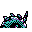

#205
Whirlipede
BugPoison
It tucks in its body and rolls forward while striking foes with spines
Base stats Total 301
HP40
Attack55
Defense99
Speed47
Special60
Details
- Species
- Curlipede
- Height
- 3'11"
- Weight
- 129.0 lb
- Catch rate
- 120
- Base exp
- 72
- Growth
- Medium Slow
Level-up moves
LevelMoveType
StartHardenNormal
StartPoison StingPoison
Lv 9Pin MissileBug
Lv 18Defense CurlNormal
Lv 21Bug BiteBug
Lv 23ScreechNormal
Lv 24LungeBug
Lv 26SludgePoison
Lv 30X ScissorBug
TM / HM
TM06 ToxicTM09 Take DownTM10 Double-EdgeTM21 Mega DrainTM22 SolarbeamTM31 MimicTM32 Double TeamTM34 BideTM39 SwiftTM40 Sludge BombTM44 RestTM50 Substitute